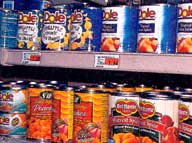

Even when the EPA negotiates a partial or total pesticide ban, it can be years before foods containing the chemical clear store shelves.
Written into the 1996 Food Quality and Protection Act (FQPA) is a "channels of trade" provision, which assures that, in the event of a ban, producers are not left holding the bag. The provision permits foods containing a canceled pesticide to stay on the market, so long as the chemical was appropriately applied prior to the ban. The clause is particularly relevant for certain frozen, dried and canned foods, which can take up to four years to reach your dinner plate. FDA Risk Assessment Chief Michael Bolger says the provision was intended to prevent a "major disruption of the food supply" and will proceed save "evidence of an acute imminent public health hazard."
"The best way to clear out what is in the channels of trade is for it to be used up," adds EPA's Jack Housenger, insisting that the FQPA provision is "necessary for the orderly transition to safer alternatives."
|
 |
|
|